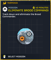
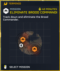

消灭虫族指挥官
“We have received reports from this region of Brood 指挥官 exhibiting 危险 new mutations.
Find and 消除 them before they can breed.— 任务 简报
消灭虫族指挥官 is a 任务 in 绝地潜兵 2. To 完成 the 目标, 绝地潜兵 must 消除 marked Brood 指挥官. Dispatching other Brood Commmanders won't progress the 任务.
目标 Steps
消灭虫族指挥官
“监控显示，虫族指挥官正位于此处。
— 目标 概述
- 找到虫族指挥官
- 绝地潜兵 must find the 目标
- 消除 虫族指挥官 [0/0]
- 绝地潜兵 must now defeat the 目标
战术信息
- See the 虫族指挥官 条款 for more information about how to 应对 them effectively.
Maps

简单难度
容易难度